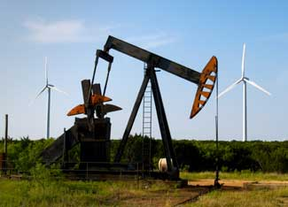

General Electric (GE) announced on May 15 that it has received an order for 667 of its 1.5-megawatt (MW) wind turbines from Mesa Power LLP, a company founded by billionaire T. Boone Pickens. Pickens, a former Texas oilman and founder of BP Capital, an energy investment firm, launched Mesa Power to build the world's largest wind power plant, called the Pampa Wind Project.
The 4,000-MW facility will be located near Pampa, Texas, which is northeast of Amarillo on the Texas panhandle, and will stretch to the east, spanning five counties. Mesa Power's current order for wind turbines - the world's largest wind turbine order for a single location - will provide 1,000 MW of wind power capacity for the $2 billion first phase of the project, which will be online by early 2011. Currently, the largest U.S. wind plant has a capacity of 736 MW.
In August 2007, Mesa Power filed documents for the Pampa Wind Project with the Electric Reliability Council of Texas (ERCOT) and awarded a contract to Burns & McDonnell to provide initial development and conceptual engineering support for the facility. The company plans to complete all four phases of the $10 billion project by 2014. According to GE, an economic impact study has found that the project will generate 1,500 jobs during its construction phase and support about 720 jobs during its operation. While operating, the project is expected to pay local landowners a total of $65.3 million per year to lease their land for wind power production.
The Pampa Wind Project will depend heavily on the state's creation of "Competitive Renewable Energy Zones" (CREZs), which will be linked to the grid by new transmission lines. Last year, the Public Utility Commission (PUC) of Texas issued an interim final order that designated five CREZs, including the future site of the Pampa Wind Project (designated as the Panhandle "B" wind zone). In response, ERCOT released a study in April that places the cost of the transmission lines at $2.95 to $6.38 billion. The Wind Coalition says the proposed improvements would save consumers more than $3 billion in annual energy costs. The PUC is expected to finalize its order soon, thereby authorizing the development of the new transmission lines.
Update: T. Boone Pickens has launched an aggressive campaign and plan to kick America's dependence on foreign oil. Click here to learn more.
For more information, read Texas Oil Tycoon Tackles Renewable Energy, from Fast Company magazine.
|
 JIM DOMKE/ISTOCKPHOTO Oil was the past, wind is the future. That's the thinking of famous oilman T. Boone Pickens, who is investing $10 billion to build the world's largest wind farm near Pampa, Texas. |
|
|